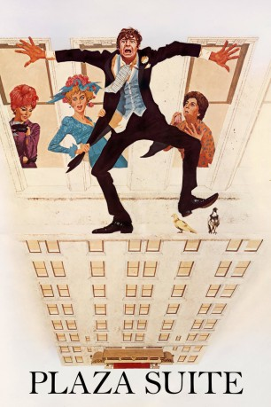

#11003 Hotelgeflüster
Alternativ: Plaza Suite (Englischer Titel)
 
 IMDB-Wertung: 6.6 / 10
IMDB-Wertung: 6.6 / 10  Metascore: 0
Metascore: 0 
Drei parallele Episoden, die in verschiedenen Zimmern des Plaza-Hotels stattfinden: Karen und Sam Nash versuchen ihre bröckelnde Ehe zu kitten, wobei der Löwenanteil der Arbeit auf Karen fällt, während Sam ihre Versuche kaum mitbekommt. Jesse Kiplinger versucht eine verflossene Flamme wieder für sich zu gewinnen. Und Roy und Norma Hubley sind bemüht, ihre Tochter aus dem Badezimmer herauszubekommen, da diese vor ihrer stattfindenden Hochzeit plötzlich Selbstzweifel bekommen hat...
Jahr: 1971
Dauer: 109 Minuten
FSK: 16
Land: USA Studio: Paramount PicturesTonspuren:
Untertitel:
Auflösung: 1080p (1920x1080) Größe: 8632 MB
Genre: Drama, Komödie, Liebe
Regisseur: Arthur Hiller
Drehbuch: Neil Simon, Neil Simon
Soundtrack: Maurice Jarre
Darsteller:
 Walter Matthau als Roy Hubley / Jesse Kiplinger / Sam Nash
Walter Matthau als Roy Hubley / Jesse Kiplinger / Sam Nash- Lee Grant als Norma Hubley
- Barbara Harris als Muriel Tate
 Maureen Stapleton als Karen Nash
Maureen Stapleton als Karen Nash- Louise Sorel als Jean McCormack
- Dan Ferrone als Bellboy
- Jenny Sullivan als Mimsey Hubley
 Alan North als Mr. Eisler
Alan North als Mr. Eisler- Frank Albanese als Parking Lot Attendant (uncredited)
- Jordan Charney als Jesse's Aide (uncredited)
 Jack Knight als Young Man (uncredited)
Jack Knight als Young Man (uncredited)- Gabor Morea als Elevator Operator (uncredited)
- José Ocasio als Room Service Waiter
- Thomas Carey als Borden Eisler
- Augusta Dabney als Mrs. Eisler
- Raina Barrett als Girl in Lobby (uncredited)
- Jack Beers als Man in Hotel (uncredited)
- James Bryson als Doorman (uncredited)
- Gordon B. Clarke als Hotel Manager (uncredited)
- Alan DeWitt als Man in Lobby (uncredited)
- Kay Elliot als Chambermaid (uncredited)
- Joseph Ferrari als Maitre d' (uncredited)
- Joan Gordon als Wedding Guest (uncredited)
- Peter Gumeny als Doorman (uncredited)
- Nancy Harewood als Attractive Woman (uncredited)
- Michael Ingram als Desk Clerk (uncredited)
- Michael Irving als Man in Lobby (uncredited)
- Maurice Marks als Waiter (uncredited)
- Kelly McCormick als Wedding Guest (uncredited)
- Robert Melendez als Waiter (uncredited)
- Jon Richards als Waiter (uncredited)
- Vicky Ruane als Wedding Guest (uncredited)
- Kurt Vladek als Desk Clerk (uncredited)
- Florence Wallach als Woman in Lobby (uncredited)
- Frank Wayne als Band Leader (uncredited)
- Allister Whitman als Minister (uncredited)
Datei: X:\1971\Hotelgeflüster (1971, FSK16, 1920x1080).mkv seit 16.04.2019
Festplatte: HD 1971-1979
 Es gibt insgesamt 28 Filme in der Gruppe '1971'
Es gibt insgesamt 28 Filme in der Gruppe '1971'